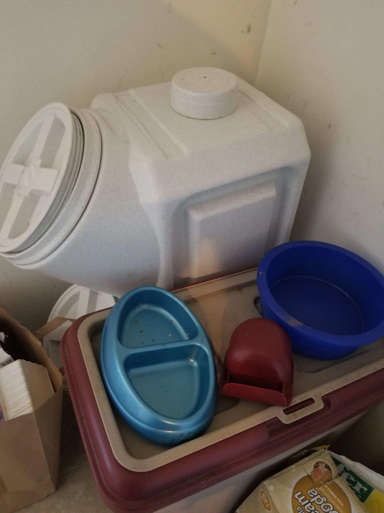
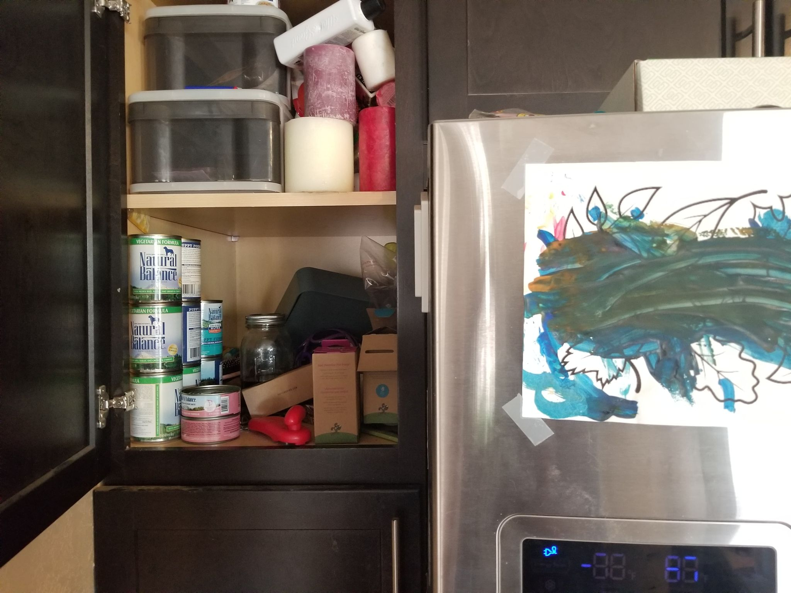
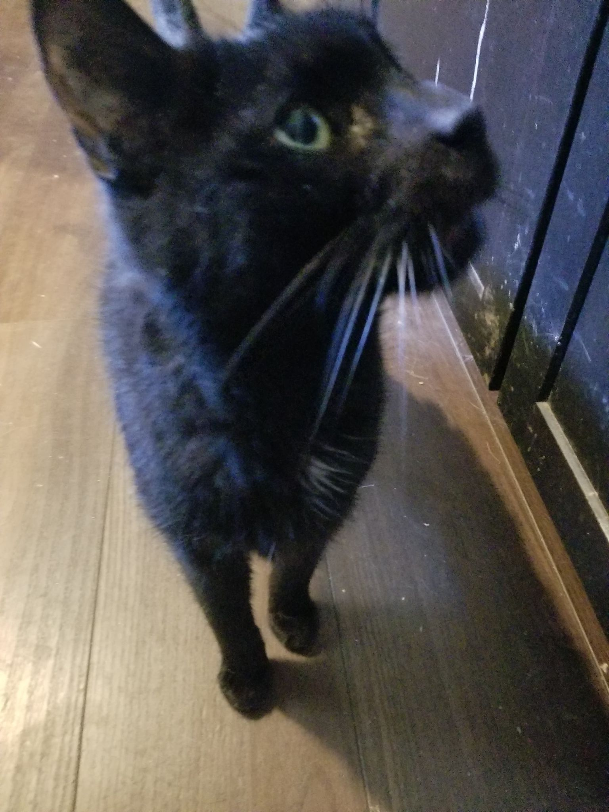
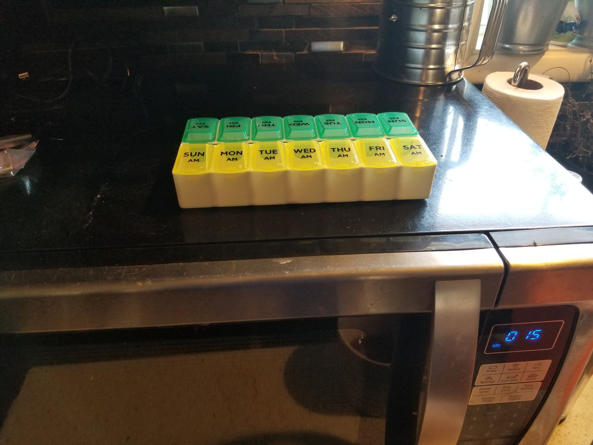

Leela
Food
Wet food in fridge and cabinet to the left of fridge. Dry food in tan/red bin.
Feeding
AM & PM: 1 cup of kibble, roughly a quarter of a cup of wet food (somewhere around there - I've never measures), and
enough water to mix it all together.
Midnight
He's the older, skinner black one.
Food
Wet food in fridge and cabinet to the left of fridge. Meds on top of microwave.
Feeding
AM & PM: About a fifth of a can of wet food along with his powdered medicine. I realized that pill organizer doesn't work so well for powder so I used the tiny knife to scrape it out. You can feed him in the bathroom. He's easy to pick up and put in there so no one else follows him in.
Other Cats
Food
White container behind Leela's food.
Feeding
Just refill their bowls if they get low.
Leela and Cat kibble
Midnight's bowl and Leela's bowl

Leela and Cat wet food

Midnight

Midnight meds
